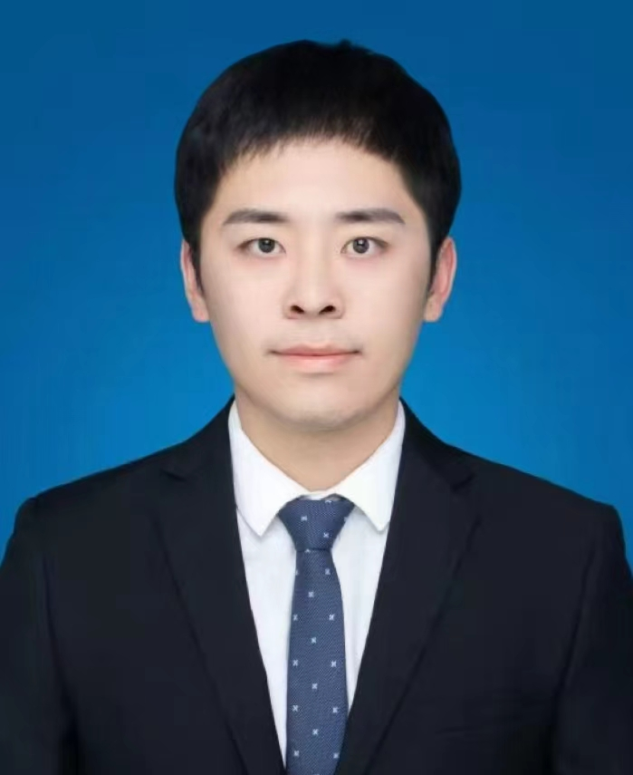
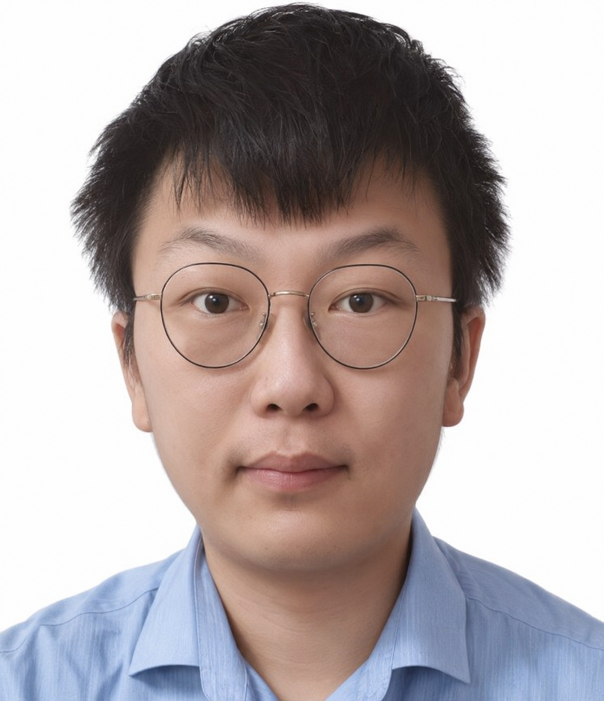
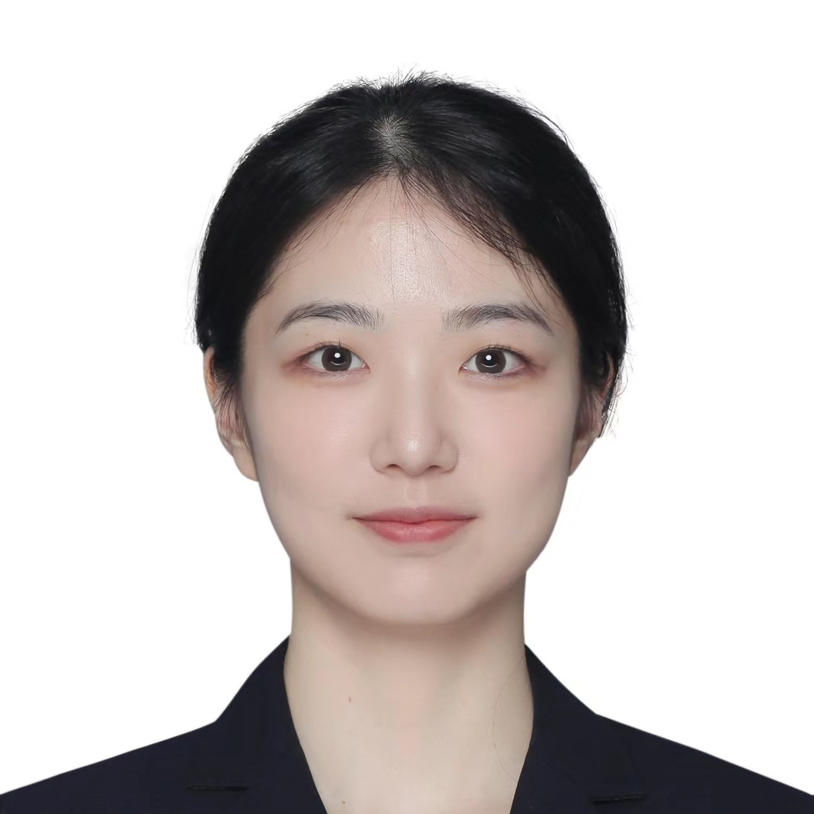
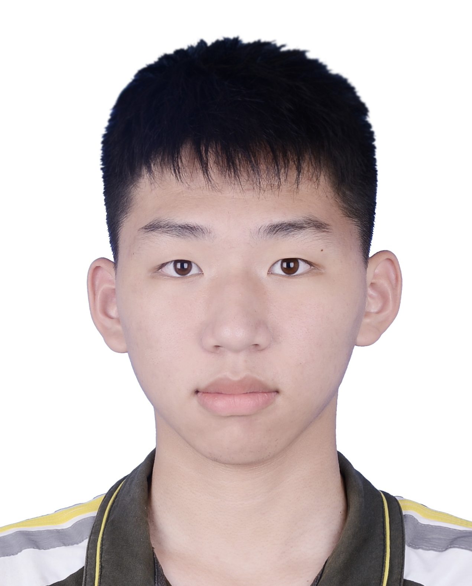
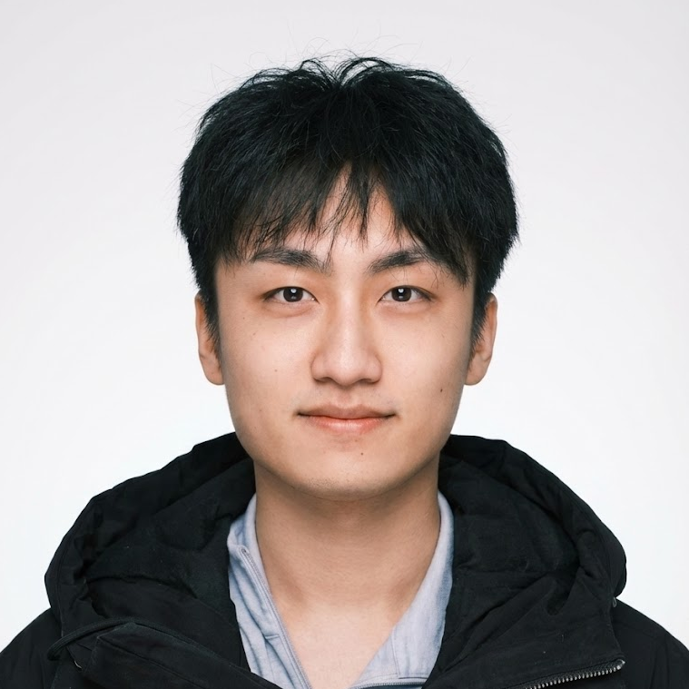
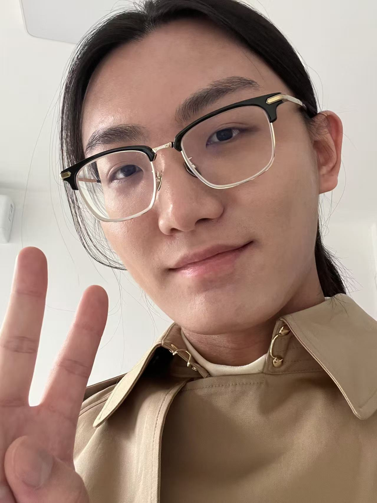
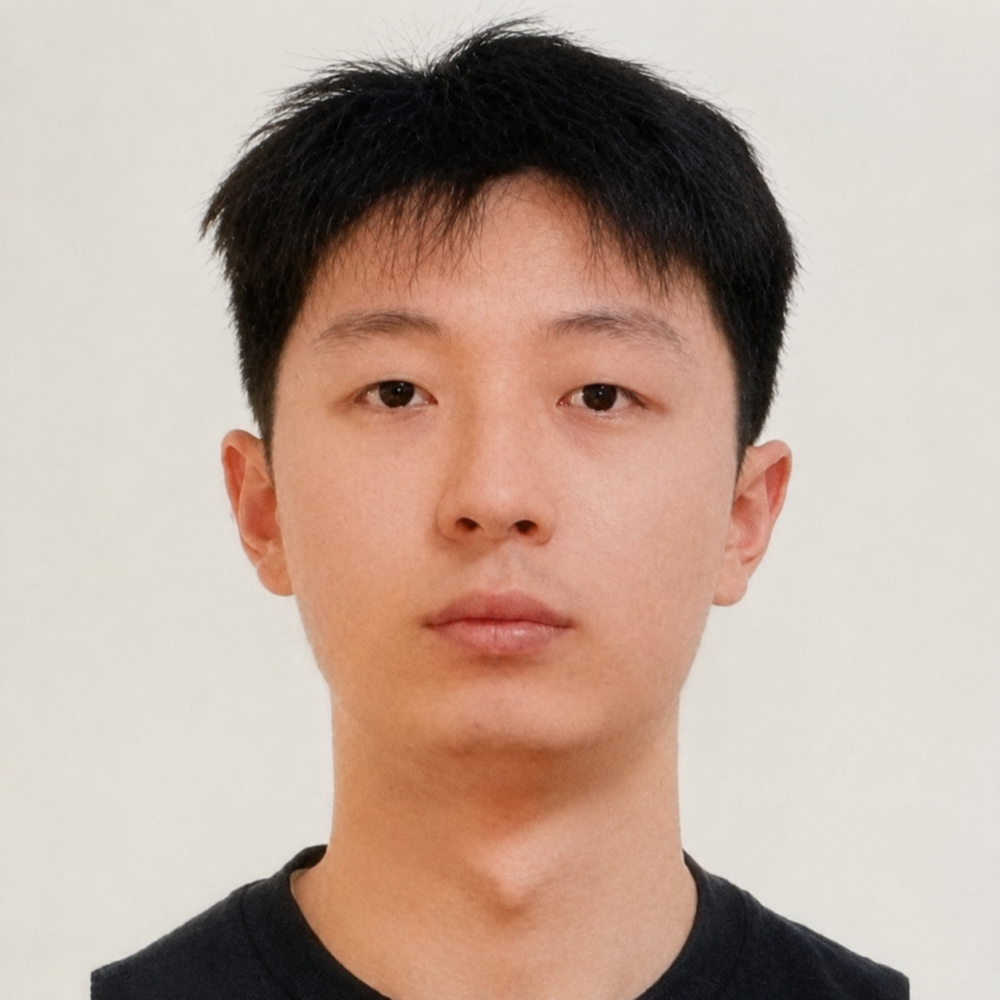

People
Faculty
Professor
Professor
Hossein Rahmani
Postdoctoral researchers
Ming Wang
Postdoc, 2025-.

Qi Wang
Postdoc, 2026-.
PhD students

Bernard Tomczyk
2023 intake.

Haoxuan Qu
2024 intake.

Xiaofei Hui
2024 intake.
Zhuoling Li
2024 intake.

Qiuchi Xiang
2025 intake.

Yu Xue
2025 intake.

Jiarui Zhang
2026 intake.

Yichen Wu
2026 intake.
JIanZhou Wang
2026 intake.
Ali Aluthman
2026 intake.
Erin Higgs
2026 intake.
Graduated Phd students
- Lin Geng Foo, SUTD, 2019-2024, President PhD Fellowship, now Postdoc at MPI.
- Jia Gong, SUTD, 2020-2024, now Research Scientist at Shanghai Academy of AI for Science.
- Li Xu, SUTD, 2020-2024, now Research Scientist at Alibaba.
- Tianjiao Li, SUTD, 2020-2024, now Postdoc at NTU.
- Xun Long Ng, SUTD, 2020-2024, now AI Scientist at NCS Group.
- Kian Eng Ong, SUTD, 2020-2024, now Lecturer at Temasek Polytechnic.
- Lanyun Zhu, SUTD, 2021-2025, AISG PhD Fellowship, now Professor at Tongji University.
- Siyang Dai, SUTD, 2021-2025, now Assistant Principal Engineer at ST Engineering.
- Duo Peng, SUTD, 2022-2025, AISG PhD Fellowship, now Professor at Tongji University.
Research alumni
- Jiarui Zhang, Research Assistant, 2025-2025, now PhD student at Lancaster University.
- Wenxiao Zhang, Postdoc, 2022-2023, now Associate Professor at Hohai University.
- Pengfei Wang, 2022-2023, now Senior Research Fellow at NTU.
- Yun Ni, 2020-2022, Postdoc, now Senior R&D Scientist at Onto Innovation.
- Sivaji Retta, 2024-2024, Research Assistant, now Data Scientist at Capgemini Engineering.
- Weiqiang Wang, 2023-2023, Research Assistant, now PhD student at Monash U.
- Qian Wu, 2023-2024, Research Assistant, now PhD student at CUHK.
- Dongxing Mao, 2023-2024, Research Assistant, now researcher at CSU.
- Hang Zhang, 2023-2024, Research Assistant, now researcher at Guangming Lab.
- Yalun Dai, 2023-2023, Research Assistant, now researcher at NTU.
- Xiaofei Hui, 2022-2024, Research Assistant, now PhD student at Lancaster University.
- Zile Yang, 2022-2023, Research Assistant, now researcher at HKUST-GZ.
- Jing Wu, 2022-2023, Research Assistant, now PhD student at Oxford University.
- Wenjie Ai, 2022-2023, Research Assistant, now PhD student at Surrey University.
- Haoxuan Qu, 2021-2024, Research Assistant, now PhD student at Lancaster University.
- Yanchao Li, 2021-2023, Research Assistant, now PhD student at NTU.
- Qichen Zheng, 2021-2022, Research Assistant, now PhD student at NTU.
- Jianhong Pan, 2021-2023, Research Assistant, now PhD student at Hong Kong PolyU.
- Xianzheng Ma, Research Assistant, now PhD student at Oxford University.
- Zehua Sun, Research Assistant, now Postdoc at NUS.
- Ziyan Guo, Research Assistant, now PhD student at HKUST.
- He Huang (Mark), now PhD student.
- Zhengbo Zhang, now PhD student.
- Zhaoyang He, now PhD student.
- Yixuan He, now PhD student.
- Shuyi Jiang, now PhD student.
- Jiayi Yuan, now PhD student.
- Feihong Shen, Research Assistant, now PhD student at Macau University.
- Yuer Ma, Visiting PhD.
- Zhongliang Wang, Visiting Professor.
- Dejun Zhang, Visiting Professor.
- Shengjing Tian, Visiting PhD.
- Xiu Shu, Visiting PhD.
- Xulin Song, Visiting PhD.
- Rui Li, Visiting PhD.
- Hao Tang, Visiting PhD.
- Mingqi Lu, Visiting PhD.
- Zhibin Gu, Visiting PhD.
- Shuanglin Yan, Visiting PhD.
- Qihao Zhao, Visiting PhD.
- Xiaoli Wang, Visiting PhD.
- Lili Wei, Visiting PhD.
- Shen Lin, Visiting PhD.
- Rui Ding, Visiting PhD.